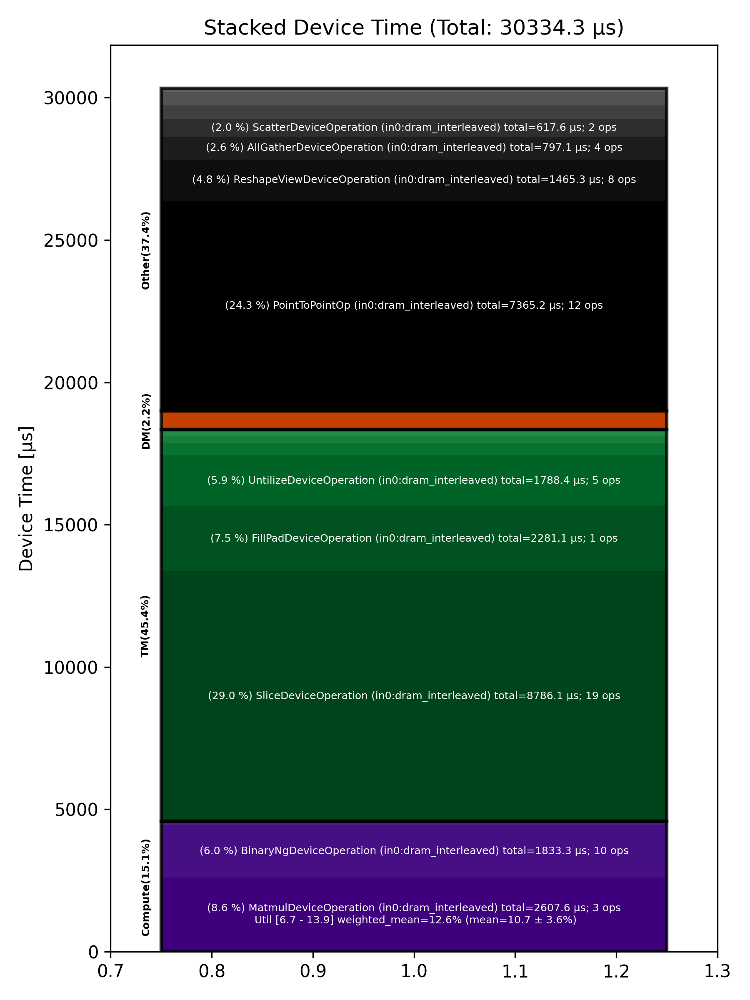

🚀 Performance Report 🚀 ======================== ID Total % Bound OP Code Device Device Time Op-to-Op Gap Cores DRAM DRAM % FLOPs FLOPs % Math Fidelity ----------------------------------------------------------------------------------------------------------------------------------------------------------------------------------- 7 0.0 % LayerNormDeviceOperation 2 112 μs 1 BF16, BF16 => BF16 51 0.0 % SliceDeviceOperation 21 2 μs 133 μs 23 BF16 => BF16 93 0.0 % UntilizeDeviceOperation 19 15 μs 256 μs 45 BF16 => BF16 126 0.0 % SliceDeviceOperation 11 2 μs 240 μs 32 BF16 => BF16 146 0.0 % TilizeWithValPaddingDeviceOperation 20 10 μs 261 μs 1 BF16 => BF16 173 0.0 % SliceDeviceOperation 31 2 μs 249 μs 23 BF16 => BF16 194 0.0 % UntilizeDeviceOperation 24 15 μs 261 μs 45 BF16 => BF16 254 0.0 % SliceDeviceOperation 11 2 μs 225 μs 32 BF16 => BF16 288 0.0 % TilizeWithValPaddingDeviceOperation 9 10 μs 87 μs 1 BF16 => BF16 307 0.0 % CopyDeviceOperation 21 2 μs 187 μs 23 BF16 => BF16 331 0.0 % CopyDeviceOperation 29 2 μs 92 μs 23 BF16 => BF16 384 0.0 % CopyDeviceOperation 9 2 μs 151 μs 23 BF16 => BF16 411 0.0 % CopyDeviceOperation 17 2 μs 73 μs 23 BF16 => BF16 424 0.0 % PointToPointOp 24 28 μs 112 μs 1 BF16, BF16 => BF16 428 0.0 % PointToPointOp 16 29 μs 288 μs 1 BF16, BF16 => BF16 434 0.0 % PointToPointOp 16 28 μs 552 μs 1 BF16, BF16 => BF16 478 0.0 % PointToPointOp 26 30 μs 581 μs 1 BF16, BF16 => BF16 542 0.6 % PointToPointOp 10 32 μs 12,072 μs 1 BF16, BF16 => BF16 556 0.0 % PointToPointOp 2 32 μs 497 μs 1 BF16, BF16 => BF16 626 0.7 % ConcatDeviceOperation 20 3 μs 15,257 μs 72 BF16, BF16 => BF16 671 0.0 % UntilizeWithUnpaddingDeviceOperation 10 27 μs 244 μs 4 BF16 => BF16 693 0.0 % RepeatDeviceOperation 23 59 μs 184 μs 72 BF16 => BF16 718 0.0 % TilizeWithValPaddingDeviceOperation 7 36 μs 192 μs 64 BF16 => BF16 750 0.1 % SLOW MatmulDeviceOperation b={16} x 128 x 736 x 5760 6 1,245 μs 837 μs 60 76 GB/s 26.3 % 14.0 TFLOPs 11.3 % HiFi2 BF16 x BFP8 => BF16 785 0.0 % ReduceScatterDeviceOperation 0 402 μs 1 μs 40 BF16 => BF16 817 0.0 % AllGatherDeviceOperation 0 395 μs 1 μs 40 BF16 => BF16 861 0.0 % BinaryNgDeviceOperation 19 304 μs 1 μs 72 BF16, BF16 => BF16 895 0.0 % UntilizeDeviceOperation 10 873 μs 1 μs 45 BF16 => BF16 921 0.2 % SliceDeviceOperation 12 4,317 μs 1 μs 72 BF16 => BF16 948 0.0 % TilizeDeviceOperation 22 133 μs 1 μs 64 BF16 => BF16 971 0.0 % UnaryNgDeviceOperation 29 123 μs 1 μs 72 BF16 => BF16 1005 0.0 % BinaryNgDeviceOperation 31 122 μs 1 μs 72 BF16, BF16 => BF16 1055 0.0 % UntilizeDeviceOperation 10 879 μs 1 μs 45 BF16 => BF16 1075 0.2 % SliceDeviceOperation 21 4,318 μs 1 μs 72 BF16 => BF16 1100 0.0 % TilizeDeviceOperation 30 132 μs 1 μs 64 BF16 => BF16 1133 0.0 % UnaryNgDeviceOperation 31 124 μs 1 μs 72 BF16 => BF16 1185 0.0 % BinaryNgDeviceOperation 8 132 μs 1 μs 72 BF16, BF16 => BF16 1213 0.0 % UnaryNgDeviceOperation 19 217 μs 1 μs 72 BF16 => BF16 1245 96.5 % BinaryNgDeviceOperation 19 165 μs 2,105,773 μs 72 BF16, BF16 => BF16 1278 0.0 % BinaryNgDeviceOperation 11 164 μs 146 μs 72 BF16, BF16 => BF16 1311 0.1 % SLOW MatmulDeviceOperation b={16} x 128 x 2880 x 736 27 1,320 μs 1,378 μs 23 37 GB/s 12.8 % 6.6 TFLOPs 13.9 % HiFi2 BF16 x BFP8 => BF16 1322 0.0 % BinaryNgDeviceOperation 28 45 μs 1 μs 72 BF16, BF16 => BF16 1371 0.1 % ReshapeViewDeviceOperation 17 1,278 μs 1 μs 72 BF16 => BF16 1394 0.0 % TypecastDeviceOperation 20 5 μs 1 μs 72 BF16 => FP32 1418 0.0 % SLOW MatmulDeviceOperation 32 x 2880 x 128 13 43 μs 1 μs 4 18 GB/s 6.1 % 0.6 TFLOPs 6.7 % HiFi2 FP32 x BFP8 => FP32 1470 0.0 % TypecastDeviceOperation 11 3 μs 1 μs 4 FP32 => BF16 1497 0.0 % TopKDeviceOperation 12 80 μs 2 μs 1 BF16 => BF16 1528 0.0 % SliceDeviceOperation 13 1 μs 2 μs 1 BF16 => BF16 1554 0.0 % SliceDeviceOperation 20 1 μs 2 μs 1 UINT16 => UINT16 1574 0.0 % TypecastDeviceOperation 3 2 μs 98 μs 1 UINT16 => FP32 1624 0.0 % ReshapeViewDeviceOperation 13 9 μs 240 μs 32 FP32 => FP32 1664 0.0 % TypecastDeviceOperation 9 4 μs 303 μs 32 FP32 => INT32 1680 0.0 % UntilizeWithUnpaddingDeviceOperation 5 4 μs 132 μs 32 INT32 => INT32 1710 0.0 % UntilizeWithUnpaddingDeviceOperation 7 4 μs 195 μs 32 INT32 => INT32 1735 0.0 % PermuteDeviceOperation 2 3 μs 92 μs 32 INT32 => INT32 1788 0.0 % PermuteDeviceOperation 18 3 μs 239 μs 32 INT32 => INT32 1811 0.0 % ConcatDeviceOperation 21 2 μs 91 μs 64 INT32, INT32 => INT32 1843 0.0 % PermuteDeviceOperation 21 3 μs 248 μs 32 INT32 => INT32 1887 0.0 % TilizeWithValPaddingDeviceOperation 10 8 μs 99 μs 32 INT32 => INT32 1919 0.0 % SoftmaxDeviceOperation 10 23 μs 259 μs 72 BF16 => BF16 1937 0.0 % AllGatherDeviceOperation 0 94 μs 770 μs 24 INT32 => INT32 1969 0.0 % AllGatherDeviceOperation 0 22 μs 284 μs 8 BF16 => BF16 2000 0.0 % ReshapeViewDeviceOperation 5 11 μs 128 μs 16 INT32 => INT32 2022 0.0 % SliceDeviceOperation 3 3 μs 181 μs 16 INT32 => INT32 2070 0.0 % UntilizeWithUnpaddingDeviceOperation 15 13 μs 253 μs 16 INT32 => INT32 2090 0.0 % SliceDeviceOperation 28 6 μs 286 μs 72 INT32 => INT32 2141 0.0 % TilizeWithValPaddingDeviceOperation 19 8 μs 222 μs 16 INT32 => INT32 2146 0.0 % BinaryNgDeviceOperation 24 12 μs 133 μs 72 INT32, INT32 => INT32 2182 0.0 % BinaryNgDeviceOperation 3 4 μs 147 μs 72 INT32, INT32 => INT32 2226 0.0 % ReshapeViewDeviceOperation 20 7 μs 258 μs 16 INT32 => INT32 2269 0.0 % ReshapeViewDeviceOperation 19 3 μs 239 μs 16 BF16 => BF16 2279 0.0 % UntilizeWithUnpaddingDeviceOperation 2 12 μs 353 μs 1 INT32 => INT32 2329 0.0 % SliceDeviceOperation 12 1 μs 252 μs 1 INT32 => INT32 2347 0.0 % TilizeWithValPaddingDeviceOperation 29 44 μs 246 μs 1 INT32 => INT32 2373 0.0 % UntilizeWithUnpaddingDeviceOperation 27 10 μs 67 μs 1 BF16 => BF16 2428 0.0 % SliceDeviceOperation 18 1 μs 145 μs 1 BF16 => BF16 2454 0.0 % TilizeWithValPaddingDeviceOperation 15 23 μs 247 μs 1 BF16 => BF16 2493 0.0 % UntilizeWithUnpaddingDeviceOperation 19 7 μs 238 μs 1 INT32 => INT32 2526 0.0 % UntilizeWithUnpaddingDeviceOperation 11 6 μs 239 μs 1 BF16 => BF16 2552 0.0 % ScatterDeviceOperation 13 309 μs 277 μs 1 BF16, INT32 => BF16 2579 0.0 % UntilizeWithUnpaddingDeviceOperation 21 12 μs 2 μs 1 INT32 => INT32 2624 0.0 % SliceDeviceOperation 9 1 μs 163 μs 1 INT32 => INT32 2630 0.0 % TilizeWithValPaddingDeviceOperation 3 44 μs 104 μs 1 INT32 => INT32 2678 0.0 % UntilizeWithUnpaddingDeviceOperation 15 10 μs 128 μs 1 BF16 => BF16 2699 0.0 % SliceDeviceOperation 29 1 μs 83 μs 1 BF16 => BF16 2742 0.0 % TilizeWithValPaddingDeviceOperation 15 23 μs 179 μs 1 BF16 => BF16 2756 0.0 % UntilizeWithUnpaddingDeviceOperation 26 7 μs 230 μs 1 INT32 => INT32 2809 0.0 % UntilizeWithUnpaddingDeviceOperation 12 6 μs 87 μs 1 BF16 => BF16 2842 0.0 % ScatterDeviceOperation 16 309 μs 151 μs 1 BF16, INT32 => BF16 2877 0.0 % TilizeWithValPaddingDeviceOperation 19 32 μs 1 μs 64 BF16 => BF16 2890 0.0 % ReshapeViewDeviceOperation 28 26 μs 1 μs 16 BF16 => BF16 2931 0.0 % UntilizeDeviceOperation 21 6 μs 202 μs 4 BF16 => BF16 2975 0.1 % MeshPartitionDeviceOperation 27 2 μs 1,397 μs 72 BF16 => BF16 2979 0.0 % TilizeWithValPaddingDeviceOperation 25 4 μs 126 μs 4 BF16 => BF16 3025 0.0 % TransposeDeviceOperation 4 2 μs 205 μs 72 BF16 => BF16 3045 0.0 % ReshapeViewDeviceOperation 27 77 μs 270 μs 72 BF16 => BF16 3082 0.0 % BinaryNgDeviceOperation 28 880 μs 199 μs 72 BF16, BF16 => BF16 3135 0.1 % FillPadDeviceOperation 10 2,281 μs 1 μs 72 BF16 => BF16 3161 0.0 % FastReduceNCDeviceOperation 12 484 μs 1 μs 72 BF16 => BF16 3178 0.0 % SliceDeviceOperation 28 62 μs 1 μs 72 BF16 => BF16 3217 0.0 % ReduceScatterDeviceOperation 0 189 μs 1 μs 24 BF16 => BF16 3249 0.0 % AllGatherDeviceOperation 0 286 μs 1 μs 40 BF16 => BF16 3285 0.0 % SliceDeviceOperation 23 16 μs 1 μs 72 BF16 => BF16 3318 0.0 % SliceDeviceOperation 15 16 μs 1 μs 72 BF16 => BF16 3336 0.0 % SliceDeviceOperation 1 16 μs 1 μs 72 BF16 => BF16 3374 0.0 % SliceDeviceOperation 7 17 μs 1 μs 72 BF16 => BF16 3416 0.0 % CopyDeviceOperation 13 16 μs 1 μs 72 BF16 => BF16 3445 0.0 % CopyDeviceOperation 23 17 μs 1 μs 72 BF16 => BF16 3468 0.0 % CopyDeviceOperation 30 17 μs 1 μs 72 BF16 => BF16 3499 0.0 % CopyDeviceOperation 29 16 μs 1 μs 72 BF16 => BF16 3526 0.1 % PointToPointOp 16 1,421 μs 5 μs 1 BF16, BF16 => BF16 3528 0.0 % PointToPointOp 24 722 μs 3 μs 1 BF16, BF16 => BF16 3532 0.0 % PointToPointOp 16 1,083 μs 5 μs 1 BF16, BF16 => BF16 3616 0.1 % PointToPointOp 23 1,799 μs 5 μs 1 BF16, BF16 => BF16 3632 0.0 % PointToPointOp 7 1,082 μs 4 μs 1 BF16, BF16 => BF16 3634 0.0 % PointToPointOp 11 1,079 μs 5 μs 1 BF16, BF16 => BF16 3745 0.0 % UntilizeWithUnpaddingDeviceOperation 8 16 μs 1 μs 32 BF16 => BF16 3753 0.0 % UntilizeWithUnpaddingDeviceOperation 0 16 μs 1 μs 32 BF16 => BF16 3800 0.0 % UntilizeWithUnpaddingDeviceOperation 13 17 μs 1 μs 32 BF16 => BF16 3841 0.0 % UntilizeWithUnpaddingDeviceOperation 8 16 μs 1 μs 32 BF16 => BF16 3853 0.0 % ConcatDeviceOperation 31 4 μs 179 μs 32 BF16, BF16 => BF16 3876 0.0 % TilizeWithValPaddingDeviceOperation 26 182 μs 113 μs 45 BF16 => BF16 3937 0.0 % ReshapeViewDeviceOperation 8 55 μs 1 μs 72 BF16 => BF16 3957 0.0 % BinaryNgDeviceOperation 23 5 μs 297 μs 72 BF16, BF16 => BF16 ----------------------------------------------------------------------------------------------------------------------------------------------------------------------------------- 100.0 % 124 device ops, 0 host ops, 0 signposts 30,334 μs 2,151,465 μs 📊 Stacked report 📊 ==================== Total % Op Code Device Time Sum Op Count Op Category Min FLOPs Max FLOPs Mean FLOPs Std FLOPs Weighted Mean FLOPs ------------------------------------------------------------------------------------------------------------------------------------------------------------------------------ 28.96 % SliceDeviceOperation (in0:dram_interleaved) 8,786.11 μs 19 TM 24.28 % PointToPointOp (in0:dram_interleaved) 7,365.24 μs 12 Other 8.60 % MatmulDeviceOperation (in0:dram_interleaved) 2,607.63 μs 3 Compute 6.74 % 13.91 % 10.65 % 3.63 % 12.55 % 7.52 % FillPadDeviceOperation (in0:dram_interleaved) 2,281.09 μs 1 TM 6.04 % BinaryNgDeviceOperation (in0:dram_interleaved) 1,833.25 μs 10 Compute 5.90 % UntilizeDeviceOperation (in0:dram_interleaved) 1,788.36 μs 5 TM 4.83 % ReshapeViewDeviceOperation (in0:dram_interleaved) 1,465.29 μs 8 Other 2.63 % AllGatherDeviceOperation (in0:dram_interleaved) 797.15 μs 4 Other 2.04 % ScatterDeviceOperation (in0:dram_interleaved) 617.60 μs 2 Other 1.95 % ReduceScatterDeviceOperation (in0:dram_interleaved) 590.67 μs 2 DM 1.60 % FastReduceNCDeviceOperation (in0:dram_interleaved) 484.47 μs 1 Other 1.53 % UnaryNgDeviceOperation (in0:dram_interleaved) 463.53 μs 3 Other 1.40 % TilizeWithValPaddingDeviceOperation (in0:dram_interleaved) 424.38 μs 12 TM 0.87 % TilizeDeviceOperation (in0:dram_interleaved) 265.25 μs 2 TM 0.60 % UntilizeWithUnpaddingDeviceOperation (in0:dram_interleaved) 182.31 μs 16 TM 0.37 % LayerNormDeviceOperation (in0:dram_interleaved) 112.28 μs 1 Compute 0.26 % TopKDeviceOperation (in0:dram_interleaved) 79.78 μs 1 Other 0.25 % CopyDeviceOperation (in0:dram_interleaved) 74.53 μs 8 DM 0.19 % RepeatDeviceOperation (in0:dram_interleaved) 58.58 μs 1 Other 0.08 % SoftmaxDeviceOperation (in0:dram_interleaved) 23.25 μs 1 Compute 0.04 % TypecastDeviceOperation (in0:dram_interleaved) 13.43 μs 4 TM 0.03 % ConcatDeviceOperation (in0:dram_interleaved) 8.55 μs 3 TM 0.03 % PermuteDeviceOperation (in0:dram_interleaved) 7.97 μs 3 TM 0.01 % TransposeDeviceOperation (in0:dram_interleaved) 2.05 μs 1 TM 0.01 % MeshPartitionDeviceOperation (in0:dram_interleaved) 1.54 μs 1 Other ------------------------------------------------------------------------------------------------------------------------------------------------------------------------------
